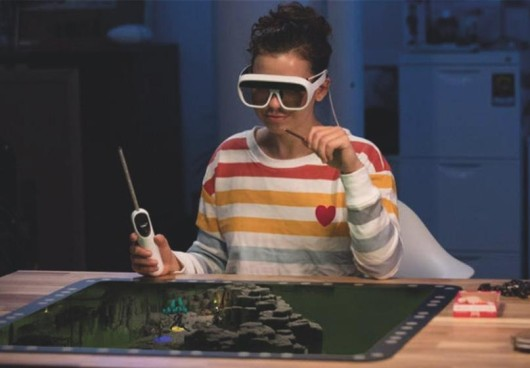

XR(eXtended Reality, 확장현실)
XR(확장현실)기술은 단순한 디스플레이를 넘어 공간 매핑, 객체 추적 등 더욱 고도화된 다양한 서비를 구현합니다. 헤드셋을 쓰지 않아도 360도의 가상뷰를 체험할 있으며, 공간음향 제공을 통해 실제와 같이 자연스러운 체험이 가능해집니다. 즉 지금까지의 가상체험은 누가 봐도 '가상이지만 그래도 꽤 실감나네' 라는 느낌에 머물렀지만 앞으로 XR을 통해 정말 실제와 같은 가상 체험이 가능해지는 것입니다.확장현실(XR)은 가상현실(VR)과 증강현실(AR)을 아우르는 혼합현실(MR) 기술을 망라하는 용어다.
가상현실(VR)이 360도 영상을 바탕으로 새로운 현실을 경험하도록 하는 기술이라면 증강현실(AR)은 실제 사물 위에 컴퓨터그래픽(CG)을 통해 정보와 콘텐츠를 표시한다. 증강현실(AR)과 가상현실(VR)은 별개이지만 이 두 기술은 각자 단점을 보완하며 상호 진화를 하고 있다. 그러나 현 단계에서는 차이가 분명히 드러난다. 가상현실(VR)은 눈 전체를 가리는 헤드셋 형(HMD) 단말기가 필요하고, 증강현실(AR)은 구글 글라스와 같은 안경으로 표현이 가능하다.
확장현실(XR)은 가상·증강현실(VR·AR) 기술의 개별 활용 또는 혼합 활용을 자유롭게 선택하며, 확장된 현실을 창조한다. 마이크로소프트(MS)가 개발한 홀로 렌즈는 안경 형태의 기기지만 현실 공간과 사물 정보를 파악하여 최적화된 3D 홀로그램을 표시한다는 점에서 확장현실(XR)의 한 형태로 볼 수 있다.
확장현실(XR) 기술이 진화하면 평소에는 투명한 안경이지만 증강현실(AR)이 필요할 때는 안경 위에 정보를 표시한다. 가상현실(VR)이 필요할 때는 안경이 불투명해지면서 완전히 시야 전체를 통하여 정보를 표시하는 게 가능해진다.
확장현실(XR)은 교육은 물론 헬스케어, 제조업 등 다양한 분야에 적용될 것으로 기대한다. 확장현실(XR)을 실현하기 위해서는 대용량의 실시간 3D 영상을 표시하기 위한 고성능 컴퓨팅 파워와 그래픽 처리 성능이 중요하다. 디스플레이 기술도 발전해야 하며, 5세대(5G) 이동통신과 같이 대용량 데이터를 초저지연으로 효과 높게 전송하기 위한 기술도 전제 조건이다.

확장현실을 즐기고 있는 모습
[네이버 지식백과] 확장현실 [eXtended Reality] (ICT 시사상식 2021)